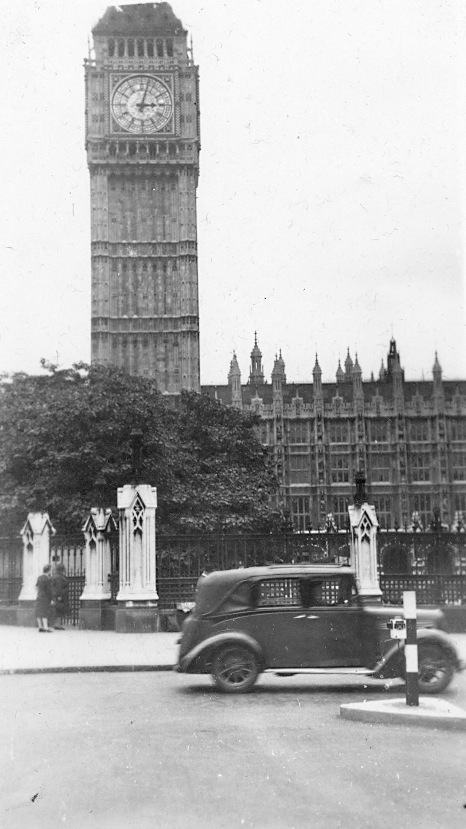

About Johnny Waller
John C. Waller was born in Buffalo, New York, on March 24th, [1913]. In 1942, he volunteered for service. Although he hoped to serve in the Air Force, he was enlisted in the United States Army and was placed in the 717th Railway Battalion, which was activated on December 1, 1943.
 Private First Class John C. Waller poses for a portrait sometime between 1942 and 1945.
Private First Class John C. Waller poses for a portrait sometime between 1942 and 1945.
The army hasn't given me any further news in regard to my army service but I'll be ready when they are.
- Johnny Waller to Geraldine Rowbottom, April 8, 1943
Training in America
From November 1943 to April 1944, Waller underwent basic training for the U.S. Army and specialized training for railway operators.
Training Facilities
- Lake Pontrachain, Louisiana
- September 1943 to December 1943
- Slidell, Louisiana
- Unknown dates while in Louisiana
- Fort Wayne, Indiana
- December 1943 to April 1944
I've been over the obstacle course every week since I entered the army. It isn't troublesome for young fellows, but some of the older men have a little difficulty. You start off by climbing an eight foot wall. This is followed by a series of climbing and jumping obstacles. About the middle of the course is a tunnel which would stick anyone the size of my uncle. Even I have trouble squeezing through. Down the home stretch are some four foot hurdles and a stream which you have to swing across on a rope. I've seen more than one take a dunking. The last obstacle is hardest. You have to go hand over hand on overhead bars stretched across a small pond. Some of the bars are at least three feet apart, so you can see it's no joke. This life is making me feel better physically though, and also adding weight. I've gained about twelve pounds so far.
- Johnny Waller to Geraldine Rowbottom, December 9, 1943
Deployment to Britain
In May 1944, Waller was sent to England. Upon his arrival, he sent letters home to his friend Geraldine Rowbottom, in which he described his surroundings and experiences.
I've never seen such changeable weather as that which we have to put up with here. As the captain told us when we first arrived, "When you can see the hills, it's going to rain. When you can't see the hills, it's raining." There's more truth than fiction in that statement.
- Johnny Waller to Geraldine Rowbottom, June 3, 1943

{kind=link}